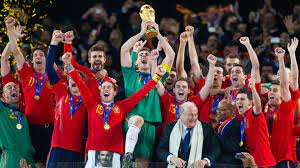

España conquistó su primer Mundial en Sudafrica mostrando un fútbol de otro planeta, tras ganar en una final de infarto a Holanda, que vuelve a quedar a las puertas del cielo. Alemania salvó el honor de las anteriores campeones quedando tercera, tras caer con España en semifinales gracias a un gol de cabeza de Puyol. El pulpo Paul, el Jabulani o las vuvzelas, grandes protagonistas.
El gol de Iniesta es parte de nuestra historia y los recuerdos sobre la narración del gol de Iniesta es una forma de vivirlo y de recordarlo. El fútbol tiene la magia de crear momentos inolvidables, instantes que trascienden el tiempo y se convierten en hitos inmortales en la memoria colectiva de los aficionados. Uno de estos momentos mágicos se vivió el 11 de julio de 2010 en el estadio Soccer City de Johannesburgo, Sudáfrica. La final de la Copa del Mundo de la FIFA entre España y Países Bajos se encontraba en su punto álgido, y en ese instante, un gol cambió la historia del fútbol español y se convirtió en un símbolo de gloria: el gol de Andrés Iniesta. Las narraciones que acompañaron este gol son testigos del éxtasis, la emoción y la grandeza de un momento que perdurará por siempre en el corazón de los amantes del fútbol. El gol de Iniesta en el Mundial 2010 marcó un antes y un después para el fútbol español y aquí te dejamos algunas de las narraciones más importantes de ese gran momento que todos los españoles recordamos con emoción. El gol de Iniesta en el Mundial 2010 marcó un antes y un después para el fútbol español y aquí te dejamos algunas de las narraciones más importantes de ese gran momento que todos los españoles recordamos con emoción.